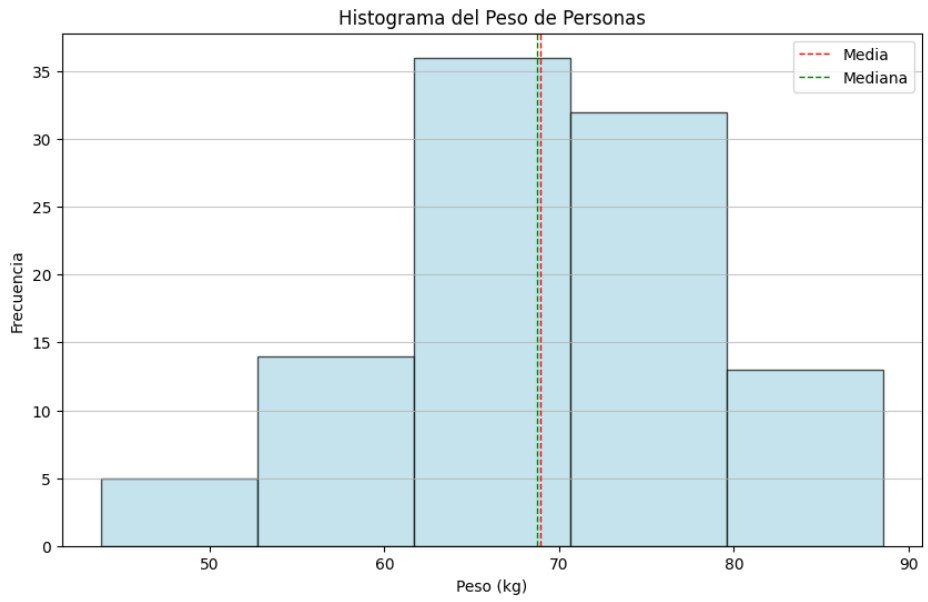

Webscraping
¿Qué es Webscraping?
El Webscraping es una técnica para extraer datos de sitios web. Utilizando herramientas de scraping, podemos recolectar información estructurada que puede ser analizada más adelante.

En este caso, hemos extraído datos de la pagina https://weather.com/ para analizar su comportamiento.
El código en Google Colab → Webscraping - Google Colab.
Técnicas de Visualización
Las técnicas de visualización de datos son fundamentales para interpretar grandes cantidades de datos. Usamos gráficos como barras, líneas y diagramas de dispersión para este propósito.
En este caso, tenemos la visualización de los datos obtenidos del articulo Carreras mejor pagadas de México.
El código en Google Colab → Tecnicas de Visualizacion - Google Colab.
Medidas de Tendencia Central
Las medidas de tendencia central nos ayudan a resumir un conjunto de datos mediante la media, mediana o moda.
En este caso, se aplicaron las medidas de tendencia central a una lista de 30 caliicaciones de alumnos.
El código en Google Colab → Medias de tendecia centrl - Google Colab.
Medidas de Dispersión
Las medidas de dispersión, como la desviación estándar y el rango, nos permiten entender la variabilidad en los datos.
En este caso, se aplica las medidas dispersion a datos aleatorios de los pesos de 100 personas

El código en Google Colab → Medidas de dispersion - Google Colab.
Conclusion
Al crear esta página web aprendí muchas cosas interesantes y útiles. Primero, pude aplicar lo que hemos estado viendo en clase de una forma más práctica y entretenida.
Una de las partes más emocionantes fue usar hipervínculos que llevan a Google Colab, donde la gente puede ejecutar el código y ver los resultados por sí mismos. Esto no solo hace que la información sea más interactiva, sino que también ayuda a entender mejor cómo funcionan las cosas en la ciencia de datos.
También disfruté diseñar la página. Elegir colores, agregar imágenes y organizar el contenido de manera clara hizo que el proceso fuera creativo y divertido. Aprendí a usar etiquetas HTML para que la estructura de la página fuera más amigable para el usuario.
Finalmente, al publicar la página en GitHub, sentí una gran satisfacción al ver que mi trabajo estaba disponible para que otros lo exploraran. En resumen, este proyecto no solo me ayudó a reforzar mis conocimientos sobre ciencia de datos, sino que también me enseñó habilidades valiosas en diseño web y comunicación. ¡Definitivamente es algo que me servirá en el futuro!
Accede al proyecto completo en mi repositorio de GitHub.